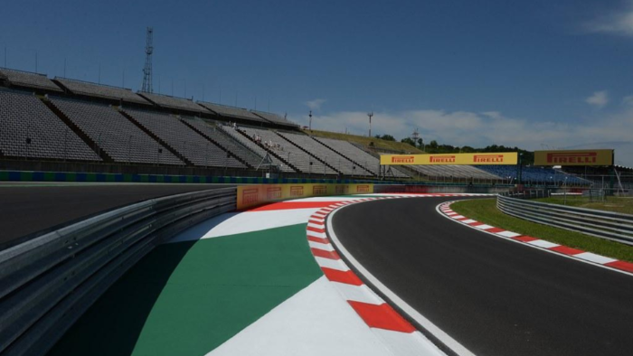
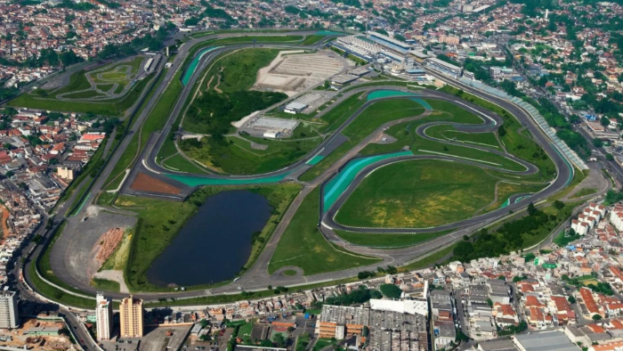
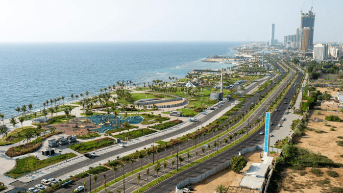
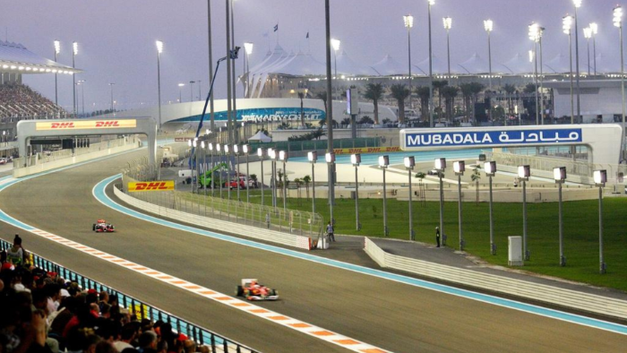
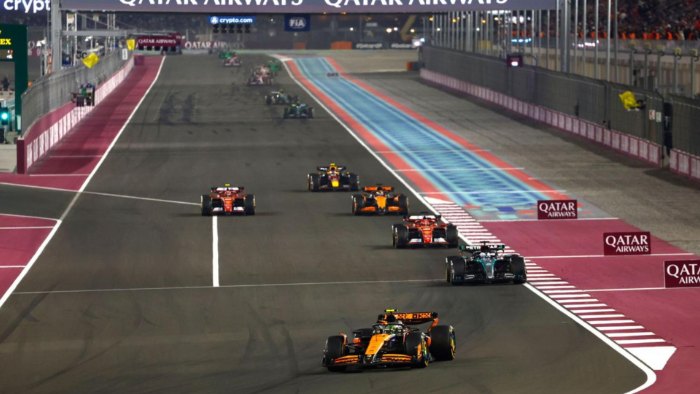
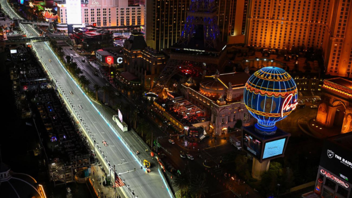
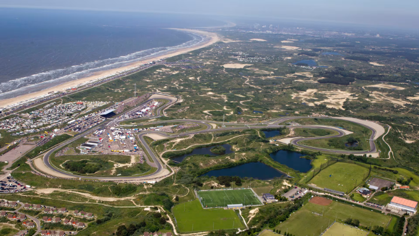
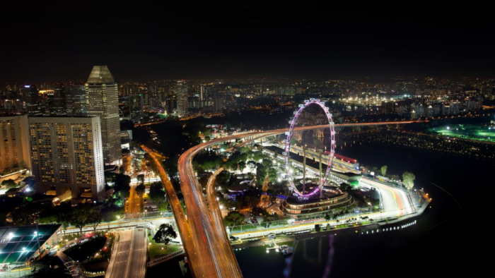
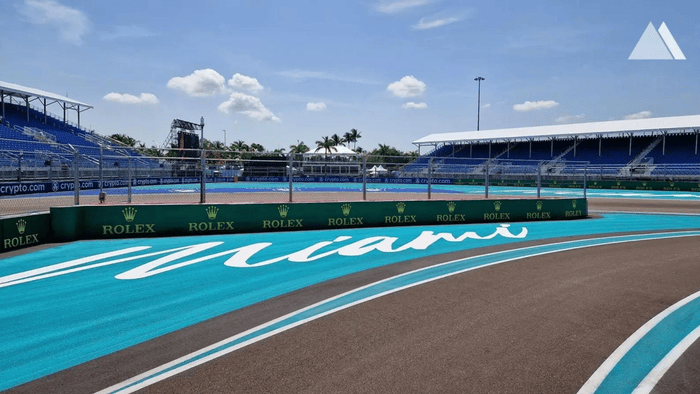
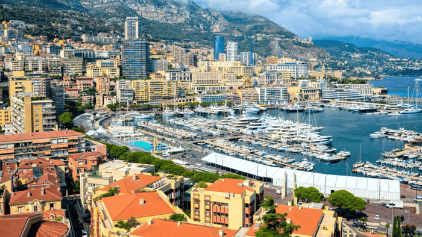
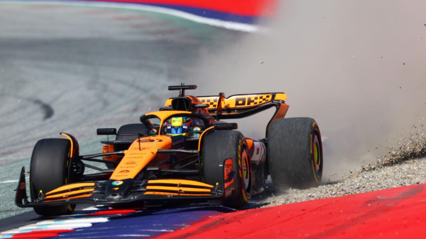
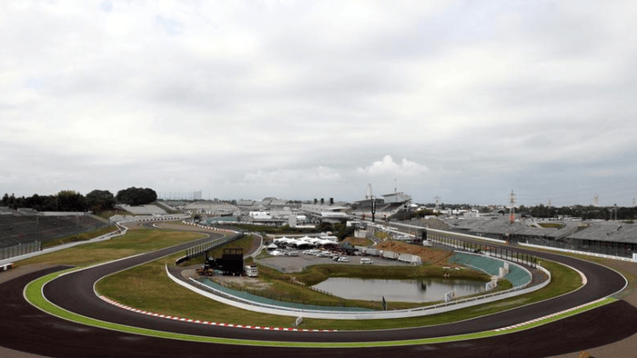
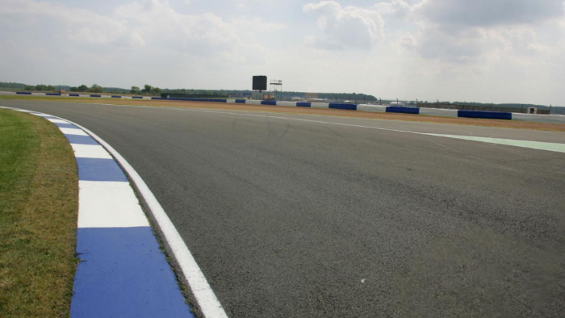
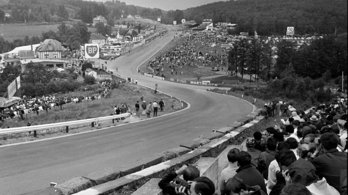
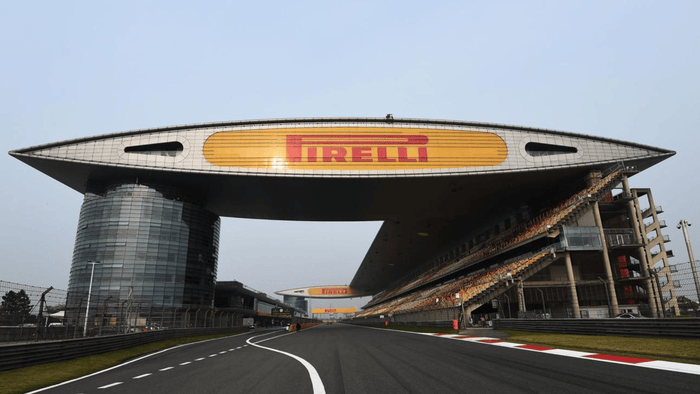
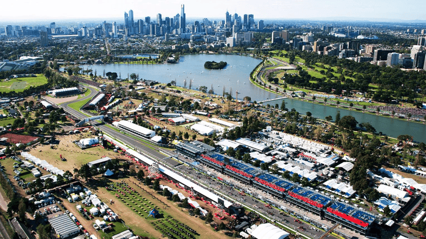
Albert Park is a semi-permanent circuit built around public roads that wrap around a scenic lake in Melbourne. The track surface is relatively smooth but starts the weekend very slippery because it’s not used regularly for racing, meaning grip evolves rapidly. It features a mix of medium- and high-speed corners, requiring a balanced aerodynamic setup rather than extremes. Overtaking is possible into Turn 1 and Turn 3, especially with DRS, but track position still matters. Drivers must be confident under braking while also managing tire degradation as the race progresses. The circuit rewards consistency and adaptability as conditions change throughout the weekend.
Shanghai is known for its unusual layout, particularly the tightening spiral of Turns 1 and 2 that punish poor line choice and tire management. The circuit features one of the longest straights in Formula 1, leading into a heavy braking zone that creates prime overtaking opportunities. Teams must find a compromise between straight-line speed and downforce for the technical middle sector. Front tire wear is a major factor due to the long, loaded corners early in the lap. The track layout encourages strategic variation, especially with undercuts and tire degradation. Drivers who manage their tires well tend to excel here over race distance.
Suzuka is one of the most technically demanding circuits in the world, featuring a unique figure-eight layout with an overpass. The opening “S Curves” require perfect rhythm and precision, as even small mistakes compound through the sequence. High-speed corners like 130R test driver bravery and aerodynamic stability. Tire wear is significant due to the continuous lateral load placed on the car through long corners. Overtaking is relatively limited, so qualifying performance is extremely important. Drivers consider Suzuka one of the purest tests of skill on the calendar.
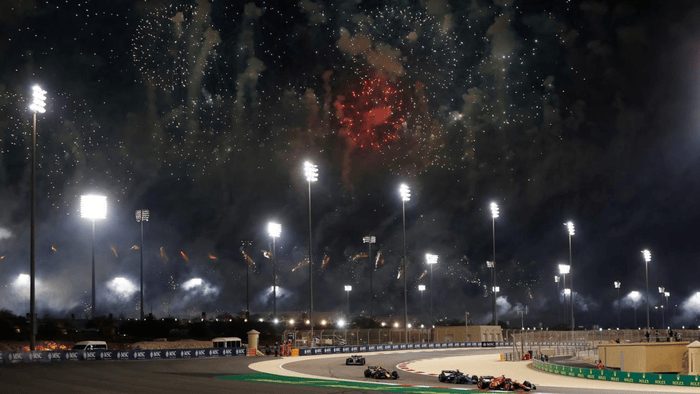
Bahrain is a modern circuit located in the desert, meaning sand often blows onto the track and reduces grip. The layout emphasizes heavy braking zones and traction out of slow corners, which puts stress on both tires and brakes. Its abrasive surface leads to high tire degradation, making strategy a key factor in race outcomes. The long straights provide good overtaking opportunities, especially into Turn 1 and Turn 4. Racing at night introduces cooling track temperatures, which can significantly change car behavior during the race. Teams must carefully manage tire life while maintaining competitive pace.
Jeddah is the fastest street circuit in Formula 1, with average speeds closer to those of permanent tracks. The layout features rapid direction changes and many blind corners bordered by walls, leaving no room for error. Drivers must rely heavily on memory and confidence due to limited visibility in several sections. The high-speed nature means even small mistakes can result in major accidents. Overtaking is possible, but it requires commitment and precise timing. The circuit demands a rare combination of street-track precision and high-speed bravery.
Miami’s circuit is a temporary layout built around a stadium complex, combining tight corners with long straights. The slow-speed chicane section is particularly tricky, often catching drivers out due to its awkward kerbs and narrow entry. Grip levels can vary significantly depending on track evolution and weather conditions. Overtaking is possible thanks to several DRS zones, especially at the end of long straights. Teams must balance low-speed traction with high-speed efficiency. The track rewards adaptability and careful car setup.
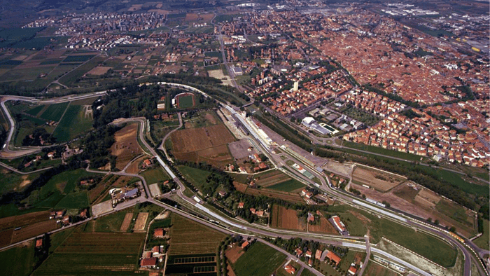
Imola is a classic, old-school circuit that runs counterclockwise, which is unusual in Formula 1. The track is narrow with limited runoff, making overtaking difficult and increasing the importance of qualifying. Elevation changes and technical corners require precise car placement. Mistakes are heavily punished due to gravel traps and close barriers. The rhythm of the circuit rewards drivers who can maintain consistent pace over long stints. It is considered a true driver’s circuit with little margin for error.
Monaco is the most iconic and tightest circuit in Formula 1, with extremely narrow streets and almost no runoff. Overtaking is nearly impossible under normal conditions, making qualifying the most important session of the weekend. The track features unique elements like the tunnel and the slowest hairpin in F1. Drivers must maintain total concentration for the entire lap, as even a small error can end the race. The circuit prioritizes precision over outright speed. It is widely regarded as the ultimate test of driver control.
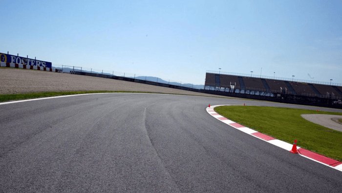
Barcelona is known as one of the most complete circuits, testing every aspect of a Formula 1 car. It features a mix of high-speed corners, long straights, and technical sections. The long Turn 3 places sustained load on tires, making degradation a key factor. Teams often use this track to evaluate upgrades due to its balanced nature. Overtaking can be difficult despite the long straight. Consistency and tire management are crucial for success here.
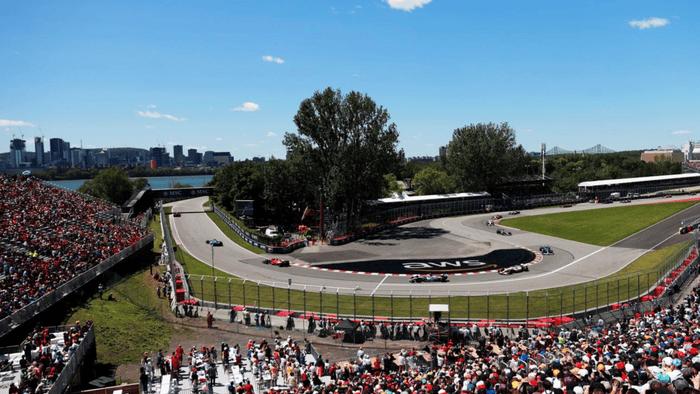
This semi-permanent circuit is built on an island and features long straights broken up by tight chicanes. Heavy braking zones create frequent overtaking opportunities. The famous “Wall of Champions” punishes drivers exiting the final chicane. The track requires strong traction and braking performance. Weather can also play a role, often adding unpredictability. It produces exciting and action-packed races.
The Red Bull Ring is one of the shortest circuits on the calendar, leading to very tight lap times. It features significant elevation changes, particularly uphill braking zones that challenge drivers. The layout is simple but deceptive, requiring precision in braking and acceleration. Overtaking is common due to multiple heavy braking zones. Track limits are a constant issue due to wide runoff areas. Small mistakes can have a big impact due to the short lap.
Silverstone is one of the fastest tracks in Formula 1, with a focus on high-speed cornering. Sections like Maggots and Becketts require rapid direction changes at high speed. Aerodynamic efficiency is critical for maintaining speed through corners. Tire wear can be high due to sustained lateral forces. Overtaking is possible thanks to wide track sections. It is a favorite among drivers for its flowing layout.
Spa is the longest circuit on the calendar and features dramatic elevation changes. The iconic Eau Rouge-Raidillon sequence is one of the most famous corners in motorsport. Weather conditions can vary across different parts of the track simultaneously. Long straights provide overtaking opportunities. The circuit requires a balance between downforce and speed. It is widely regarded as one of the greatest tracks in the world.
The Hungaroring is a tight and twisty circuit with very few overtaking opportunities. It is often compared to Monaco but without barriers. The track is dusty and grip improves significantly over the weekend. Drivers must focus on maintaining rhythm through continuous corners. Tire management is important due to high temperatures. Qualifying is crucial for race success.
Zandvoort features dramatic banking and is located in coastal sand dunes. The track is narrow, making overtaking difficult. The banking allows for higher speeds through certain corners. Wind and sand can affect grip levels. Drivers must be precise with positioning. It offers a unique challenge compared to other circuits.
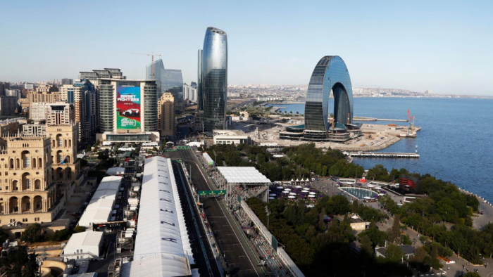
Baku combines extremely long straights with very tight corners. The castle section is one of the narrowest parts of any F1 track. Overtaking is common due to the long main straight. Drivers must switch between precision and high-speed driving. Safety cars are frequent due to incidents. It often produces unpredictable races.
Singapore is a physically demanding night race with high humidity. The track features many slow corners and few opportunities to rest. Drivers experience extreme fatigue during the race. Overtaking is difficult but possible with strategy. Safety cars are common. It is one of the toughest races on the calendar.
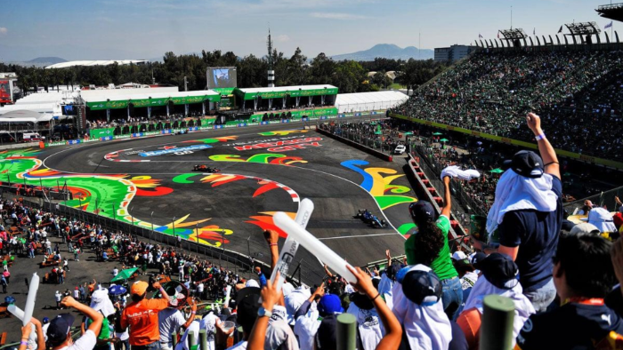
This circuit sits at very high altitude, reducing air density and downforce. Engines also produce less power due to thin air. The long straight allows overtaking into Turn 1. The stadium section provides a unique atmosphere. Cooling becomes a challenge for cars. It is unlike any other circuit.
Interlagos is a short circuit with significant elevation changes. The anti-clockwise layout puts strain on drivers’ necks. Weather is often unpredictable, leading to dramatic races. Overtaking is common due to multiple braking zones. The passionate crowd adds to the atmosphere. It is a historic and exciting venue.
The Las Vegas circuit runs along the famous Strip at night. It features very long straights and high speeds. Cold night temperatures affect tire performance. Overtaking is frequent due to long braking zones. The layout prioritizes spectacle and speed. It is one of the newest additions to the calendar.
Lusail features fast, flowing corners originally designed for motorcycles. The layout places sustained stress on tires. Racing at night changes grip levels throughout the event. Overtaking is possible but not easy. Drivers must maintain smooth inputs. Tire strategy plays a major role.
Yas Marina is a modern circuit that hosts the season finale. It transitions from daylight to night during the race. Recent layout changes have improved overtaking opportunities. The track includes long straights and technical corners. Tire strategy and race management are important. It often plays a decisive role in championships.